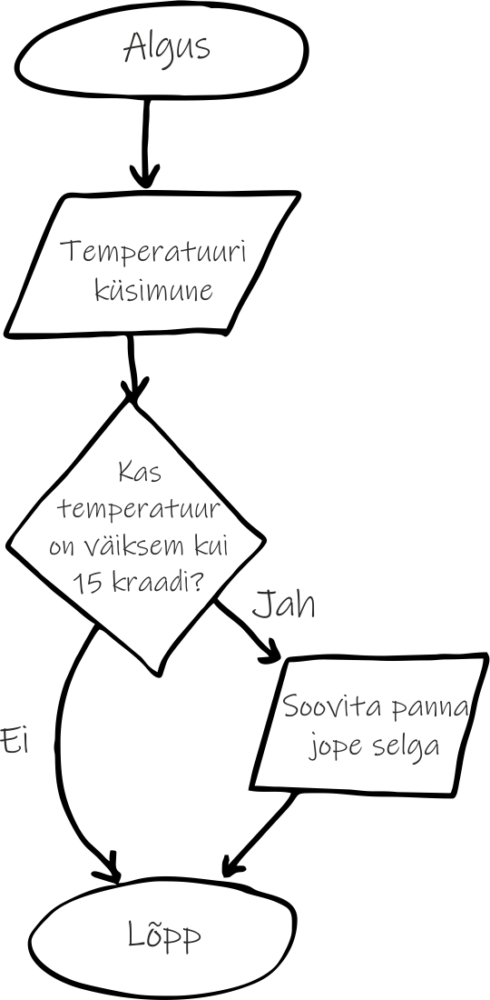
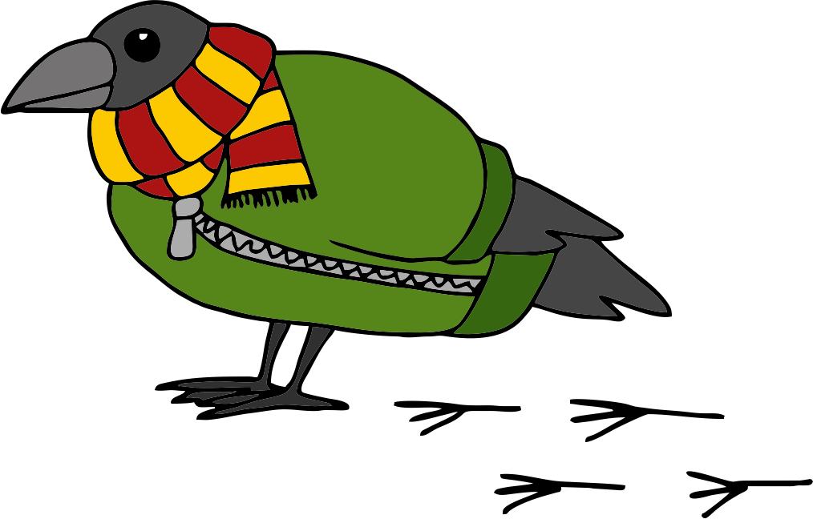
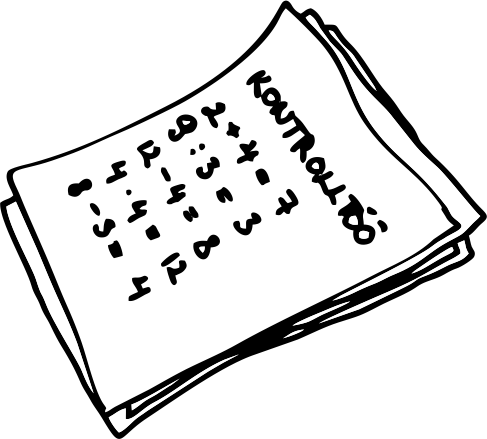
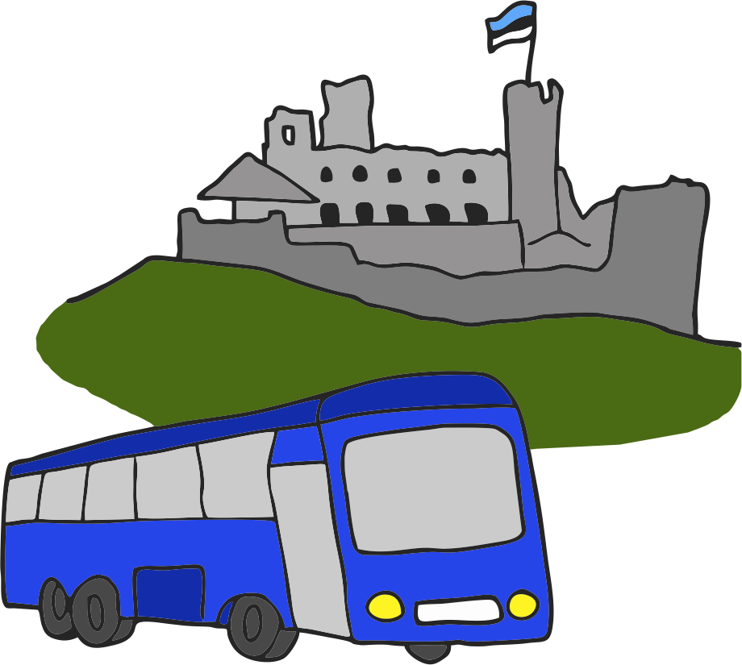

Kas mäletad kuidas algoritmide peatükis joonistasime plokkskeeme, mis teatud tingimustel hargnesid? Selles peatükis
õpime neid tingimusi ka programmis kirja panema.
Mis on tingimuslaused?
Vahepeal on meil vaja teatud tingimustel teha mõnda tegevust. Näiteks kui õues on külm, paned õue minnes jope selga. Või kui on koolipäev,
siis lähed kooli. Programmeerides kasutatakse selliste olukordade kirjeldamiseks tingimuslauseid. Juba algoritmide
peatükis vaatasime, kuidas neid plokkskeemil kujutada. Näiteks järgmine plokkskeem annab soovitusi ühele külmavaresele riietumise osas:

Kuidas aga sama asja koodis kirja panna?
Pythonis kasutatakse tingimuslause alustamiseks võtmesõna if,
mis tähendab inglise keeles "kui". Võtmesõnale if järgneb tingimus. Tingimuse lõpus peab olema koolon. Kõik read, mida tahame täita, kui tingimus on tõene, peavad olema taandega. Igal
tingimuslausel peab olema vähemalt üks taandega rida, mida täidetakse, kui tingimus on tõene. Selleks, et minna edasi selle programmi osaga, mis
ei sõltu tingimusest, vähendame taanet.
See programm väljastab "Pane jope selga!", kui sisestatud temperatuur on väiksem kui 15. Kui see tingimus ei ole täidetud ehk
temperatuur on 15 või kõrgem, siis ei väljasta programm midagi. Nüüd proovime aga kasutajale veel "Ilusat päeva!" soovida, olenemata sellest, mis temperatuur
õues on:
Selles näites kasutasime tingimuse koostamiseks "väiksem kui" märki. Kuid mida saab veel tingimuste koostamiseks kasutada?

Tõeväärtustehted
Vaatame nüüd tüüpilisemaid tõeväärtustehteid ehk tehteid, mille tulemuseks on tõeväärtus True või
False. Neid kõiki saab tingimustes kasutada.
Avaldis
Väärtus
Selgitus
3 == 3.0
True
Kuna üks võrdusmärk tähendab Pythonis omistamist, kasutatakse kahe väärtuse võrdsuse
kontrollimiseks kahte võrdusmärki.
Nii saab kontrollida võrdsust nii arvude kui sõnede vahel.
"Tere" == "Tere"
True
3 == 5
False
"Tere" == "tere"
False
Sõnede võrdlemisel tehakse suurtel ja väikestel tähtedel vahet.
"4.0" == 4.0
False
Sõne pole kunagi arvuga võrdne.
3 != 2
True
Hüüumärk ja võrdusmärk kontrollib mittevõrdumist. Seda saab samuti kasutada nii arvude kui
sõnedega.
"Tere" != "tere"
True
3 > 2
True
Arvude puhul saame kasutada ka "suurem kui", "väiksem kui", "suurem võrdne kui" ja "väiksem
võrdne kui" võrdlusi.
3 >= 2
True
3 < 2
False
3 <= 3
True
"abc" < "def"
True
Sõnede puhul saame kasutada samu võrdlusi, kuid võrdlemine käib tähestiku järgi.
"Tere" > "tere"
False
Kusjuures suured tähed on siin eespool väikestest tähtedest ja seega "T" saab väiksema väärtuse kui "t".
"re" in "Tere"
True
Operaator in kontrollib tähe või alamsõne leidumist sõnes.
"o" in "Tere"
False
"Tere päevast!".startswith("Te")
True
Kontrollib, kas sõne algab etteantud sõnega.
"Tere päevast!".startswith("!")
False
"Tere päevast!".endswith("!")
True
Kontrollib, kas sõne lõppeb etteantud sõnega.
"Tere päevast!".endswith("Te")
False
"123".isdigit()
True
Kontrollib, kas sõne sisaldab ainult numbreid.
"12a".isdigit()
False
"abc".isalpha()
True
Kontrollib, kas sõne sisaldab ainult tähti.
"12a".isalpha()
False
Kuidas kirjutada rohkem kui ühe haruga tingimuslauseid?
Kaheharuline tingimuslause
Eelmises tingimuslause näites väljastasime "Pane jope selga!", kui temperatuur oli alla 15 kraadi. Kuid nüüd tahaksime väljastada ka "Jopet pole vaja!",
kui see tingimus ei olnud tõene. Selleks saame lisada tingimuslausele teise haru, mida täidetakse juhul, kui algne tingimus ei olnud tõene. Selle haru
loomiseks kasutatakse else võtmesõna, millele järgneb koolon. Else tähendabki
inglise keeles "vastasel juhul". Else peaks olema sama taandega nagu oli if
võtmesõnaga tingimuslause. Käsud, mida täidetakse else-harus, tuleb kirjutada jälle taandega.
Tingimuslaused üksteise sees
Oletame nüüd, et tahaksime lisaks veel kontrollida, et äkki on
temperatuur lausa alla 0 kraadi, ja sellisel juhul väljastada "Pane kasukas selga!". Üks variant selleks on lisada esimese if-lause
alla veel teinegi, mis kontrolliks, kas temperatuur on alla 0 kraadi. Selleks, et Pythoni interpretaator saaks aru, mis käsud kuhu alla lähevad,
kasutame taandeid. Sisemise tingimuslause alla kuuluvad käsud peavad olema nüüd lausa kahe taandega.
Mitmeharuline tingimuslause
Ilmselt märkad, et kui tahaksime nüüd veel tingimusi lisada, siis peaksime üksteise sisse päris palju
tingimuslauseid lisama ja kood võib minna natuke raskesti loetavaks. Õnneks on olemas ka lihtsustatud viis mitme haruga tingimuslausete
kirja panemiseks. Selleks kasutatakse seekord võtmesõna elif. See on kokku pandud sõnadest
else ja if ning sellele võtmesõnale järgneb samuti tingimus ja koolon. Selliselt
võime elif-tingimusi lisada nii palju kui tahame. Programm hakkab järjest neid tingimusi läbi käima kuni leiab mõne, mille
tingimus on tõene. Kui tõene tingimus on leitud, siis sellele järgnevaid elif- ja else-osasid üldse ei vaadatagi. Kui aga ei if ega ükski elif-tingimustest pole tõene, siis
täidetakse else-haru. Muidugi vaid juhul, kui see on olemas. Kui seda ei ole, siis minnakse lihsalt programmi täitmisega edasi.
Pane tähele, et siin muutsime tingimuste järjekorda. Kõigepealt kontrollime, kas temperatuur on väiksem kui 0 ning alles siis
kontrollime, kas temperatuur on väiksem kui 15. Kas taipad miks me nii teeme? Mis juhtuks kui kontrolliksime kõigepealt kas
temperatuur on väiksem kui 15?
Oletame, et meil on temperatuur -2 ja alustame sellest, et kontrollime, kas temperatuur on väiksem kui 15. See tingimus oleks
tõene, sest -2 on väiksem kui 15. Pärast esimese tõese tingimuse leidmist programm enam teisi samas komplektis olevaid tingimusi edasi ei vaata. Seega -2 kraadi
korral väljastaks meie programm "Pane jope selga!".
Tingimuslause võib koosneda ainult if-lausest,
if- ja else-lausetest, if-
ja elif-lausetest või kõigist kolmest. If-lauseid võime oma
koodi ka üksteise järele kirjutada. Vaatame nüüd järgmist kahte koodijuppi. Pealtnäha tunduvad nad üsna sarnased, kuid käituvad
erinevalt.
Esimeses koodijupis on neli eraldiseisvat tingimuslauste konstruktsiooni ja viimasel neist on ka else-haru.
Teises koodijupis on ainult üks tingimuslause konstruktsioon. Koodijuppide väljastused on järgmised:
Tegemist on positiivse arvuga. Arv ei ole 5. Arv on 4. Tegemist on paarisarvuga.
Tegemist on positiivse arvuga.
Kuna esimesel juhul on iga tingimuslause eraldiseisev, siis minnakse igat tingimust kontrollima ja tõese tingimuse korral täidetakse
vastava haru sisu. Teisel juhul on aga üks tingimuslausete konstruktsioon ja seal lõpetatakse elif-tingimuste
läbivaatus kohe kui leitakse esimene tõene tingimus.
Tõeväärtustehete kombineerimine
Oskame nüüd teha mitmeharulisi tingimuslauseid, kuid vahepeal on meil vaja ka keerulisemaid tingimusi koostada. Selleks
saame tõeväärtusi omavahel kombineerida loogiliste tehete abil. Neid loogilisi tehteid on kolm:
and, or ja not.
Eesti keeles tähendaksid need "ja", "või" ning "ei".
Tulemuseks annavad need samuti tõeväärtuse.
Loogiline tehe
Avaldis
Väärtus
Selgitus
and
True and True
True
Tulemus on tõene ainult siis, kui kõik tehte and abil seotud
tõeväärtused on tõesed.
True and False
False
False and True
False
False and False
False
or
True and True
True
Tulemus on tõene siis, kui vähemalt üks or abil seotud
tõeväärtustest on tõene.
True and False
True
False and True
True
False and False
False
not
not True
False
Tehe not pöörab tõeväärtuse ümber.
not False
True
Võime neid tehteid kasutades erinevaid tõeväärtustehteid omavahel kombineerida, kuid tähtis on ka
nende tehete järjekord. Kõige tähtsam neist on not. Seda rakendatakse kõige esimesena. Seejärel
rakendub and ja viimasena or.
Võtame näiteks järgmise tõeväärtustehete kombinatsiooni ja vaatame, mis järjekorras siis tehteid tehakse.
5 < 4 and 3 > 2 or not 2 > 4 and 5 > 4
Esimese asjana võime kõik tõeväärtustehted asendada nende tõeväärtustega.
Nüüd võime rakendada not loogilist tehet ja saame tulemuseks:
Seejärel võtame ette and tehted.
Ja viimaseks jääb or, mis annab kogu avaldise tulemuseks:
Soovi korral saame sulgudega ise järjekorda ümber tõsta. Täpselt nii, nagu matemaatikas. Siis sulgudes olevad tehted
tehakse esimesena.
5 < 4 and (3 > 2 or not 2 > 4 and 5 > 4)
Asendame tõeväärtustehted tõeväärtustega:
Siinkohal tegelikult juba näeme, et ükskõik mis väärtuse saab sulgudes olev avaldis, kogu avaldise väärtus on
ikka False, sest and tehte esimene pool on juba False.
Ka Python on piisavalt tark ja sellises olukorras ta sulgudes olevat osa ei vaatakski, sest see ei saaks lõpptulemust mõjutada.
Harjutused
Kontrolltööde hindamine
Õpetaja Maria hindab oma õpilaste matemaatika kontrolltöid. Tööst oli võimalik saada kokku 30 punkti.
Ta plaanis panna õpilastele hinded järgmise skeemi abil:
Hinne 5: 26-30 punkti
Hinne 4: 20-25 punkti
Hinne 3: 10-19 punkti
Hinne 2: 0-9 punkti
Saadud punktid on alati täisarvud. Kirjuta programm, mis küsib kontrolltöös saadud punktide summat ning väljastab vastava hinde. Kui punkte on rohkem kui 30
või vähem kui 0, peaks programm kasutajale ütlema, et selline punktide arv pole võimalik. Mõned näited programmi tööst:

Sisesta saadud punktide arv: 27 Saadud hinne on 5.
Sisesta saadud punktide arv: 25 Saadud hinne on 4.
Sisesta saadud punktide arv: 34 Selline punktide arv pole võimalik.
Klassiekskursioon
Õpetaja Maria korraldab õpilastele ekskursiooni Rakvere linnusesse. Tal on olemas nimekiri õpilastest, kes
soovivad ekskursioonile tulla, ja nüüd on tal vaja transpordiks bussid tellida. Kirjuta programm, mis küsib ekskursioonile minejate arvu,
bussi istekohtade arvu ning arvutab, mitu sellist bussi on vaja tellida. Näited programmi tööst:
Sisesta õpilaste arv: 30 Sisesta bussi istekohtade arv: 30 Vaja läheb 1 bussi.
Sisesta õpilaste arv: 40 Sisesta bussi istekohtade arv: 30 Vaja läheb 2 bussi.
Sisesta õpilaste arv: 15 Sisesta bussi istekohtade arv: 30 Vaja läheb 1 bussi.
Sisesta õpilaste arv: 60 Sisesta bussi istekohtade arv: 30 Vaja läheb 2 bussi.
Abiks võivad olla tehted // ja %. Tuleta meelde, mis need tegid.

Proovi ka ise mõelda välja mõni programm, mis kasutaks tingimuslauset. Näiteks võid kasutajalt küsida kellaaega ja
anda soovitusi, mida sellisel ajal teha võiks. Näiteks kell 7 võiks ärgata või hambaid pesta ja kell 18 õhtust süüa.